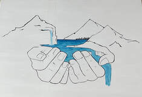
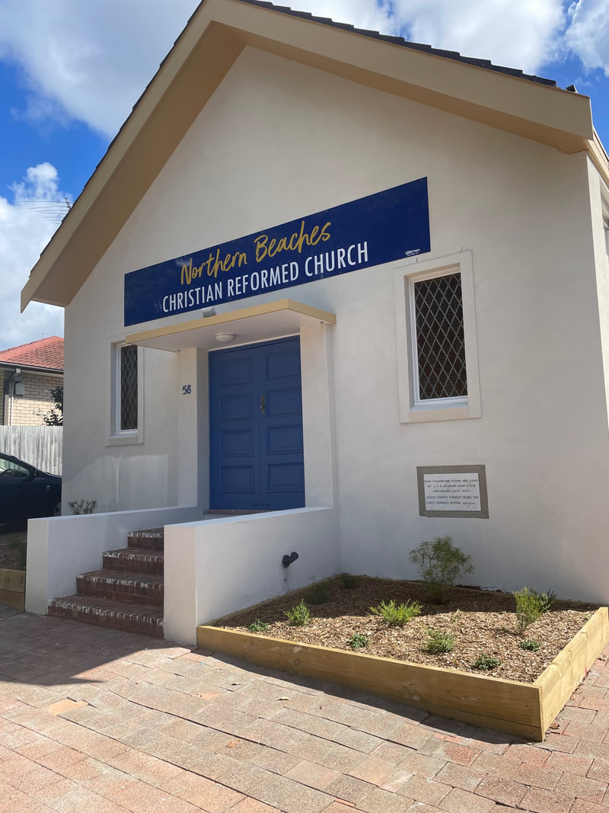
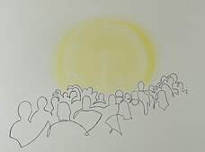

Love of God
Where Jesus began and where we begin — loving the Lord with heart, soul, and mind.
Matthew 22:37
We are a welcoming Reformed Christian fellowship on Sydney’s Northern Beaches, gathering each Sunday to praise God, open the Scriptures, and follow Jesus Christ together.
“To praise God, declare His authority, goodness and compassion, and through evangelism and instruction call the members of the surrounding community to become followers of Jesus Christ.” Our Purpose Statement
Our local fellowship started in 1954 and belongs to the Christian Reformed Churches of Australia (CRCA) — a network of more than 50 congregations rooted in the historic Protestant Reformation and grounded in the Scriptures of the Old and New Testaments.
Whether you have walked with Christ for many years or are exploring the Christian faith for the first time, we would love to welcome you this Sunday morning.

Guided by Jesus’ summary of the law in Matthew 22:35–40, five key loves act as signposts of our calling as His disciples.

Where Jesus began and where we begin — loving the Lord with heart, soul, and mind.

Knowing God and understanding His will through Scripture, a lamp for our feet.

Seeking and caring for those who need God’s grace or face deep personal need.

Active, humble service following Christ, who came not to be served, but to serve.

Cherishing God’s chosen people, called out of darkness into His marvellous light.
Catch up on recent Sunday services and biblical teaching from Pastor Ben Peletier and guest speakers.

Micah 6:6-8 & John 3:14-21
In the month of November we have been looking at five key truths that we as a church want to live by. These key truths have been based around a key principle, the idea of…

Baptism Service · Acts 2:41-47
This week we celebrate the baptism and profession of faith both Mary Habchy and Grace Green. These two women today publicly acknowledge their dependance on Jesus and their…

Luke 24:13-27
This week we continue our series through the 5 Loves of the Church. Last week we looked at the love of God and our love for God, which is the source and foundation of it all.…

1 John 4:7-21
This week we being our membership month, focusing in on the five loves we as a church profess to be about. These five loves are drawn from the Bible and express what we feel…
On-site parking at our church property is limited, so here are the best places to park on Sunday mornings.
Located directly across Fisher Road from the church. Access the car park via Kingsway, where free underground parking is available for up to 3 hours.
Safety tip: Crossing Fisher Road can be hazardous, so please take great care, especially with children.
Located on the same side of Fisher Road as the church, approximately 100 metres further down the road — no crossing of Fisher Road needed.
The gate is generally open on Sunday mornings; entry is via the driveway down the side of the building.
A few car spaces inside our property line are reserved for people who are unable to walk further. A small number of street bays exist directly outside on Fisher Road.
Please note: Do not park on marked yellow lines on the street, as they are “No Parking” zones and fines are often issued.
Worship on Sunday is just the beginning of our life together throughout the week.
Join our Tuesday Evening Small Group meeting at the church from 7:30pm for Christian Bible study, prayer, and fellowship.
We support One Meal Northern Beaches, Scripture Education at Dee Why Primary and Cromer High, Crossroads Prison Ministries, IJM, and Solomon Islands missions.
All children have a right to feel and be safe. All leaders hold Working With Children Checks, Safe Ministry Checks, and ChildSafe training.